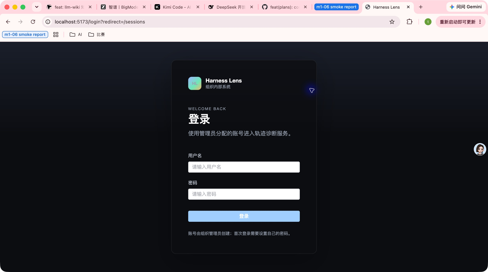
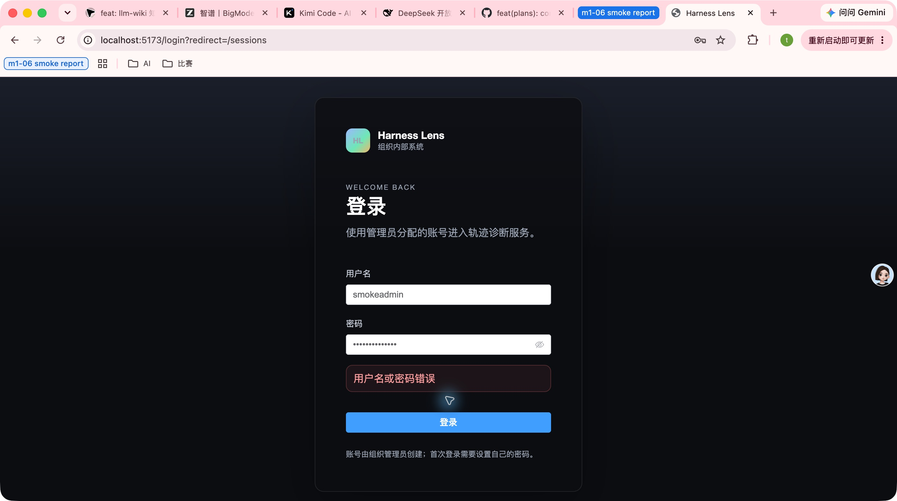
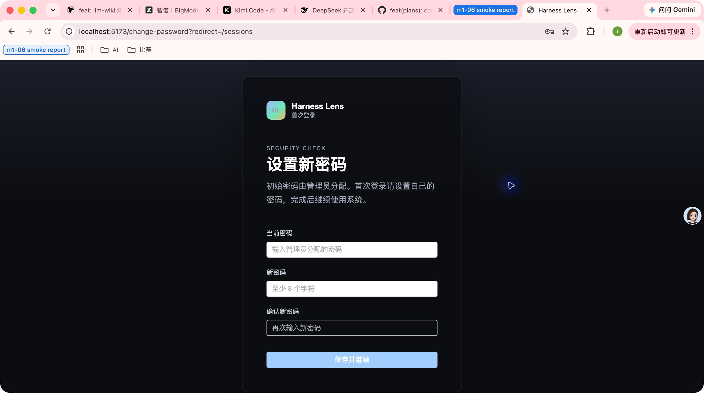
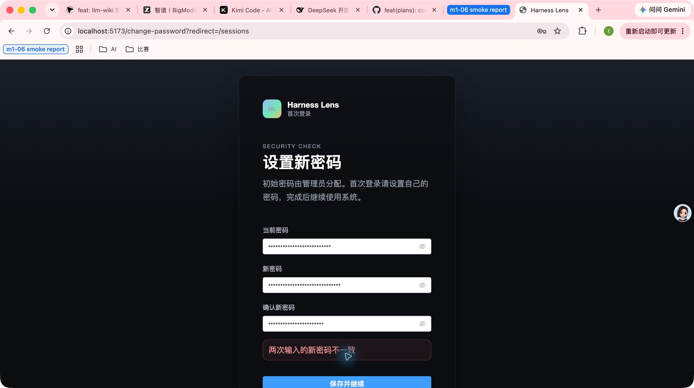
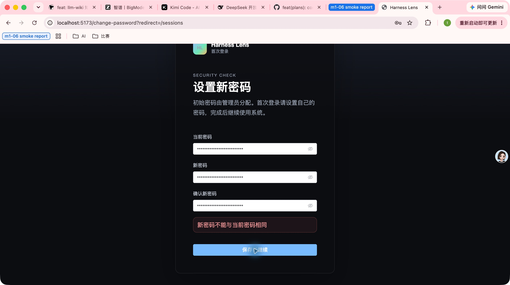
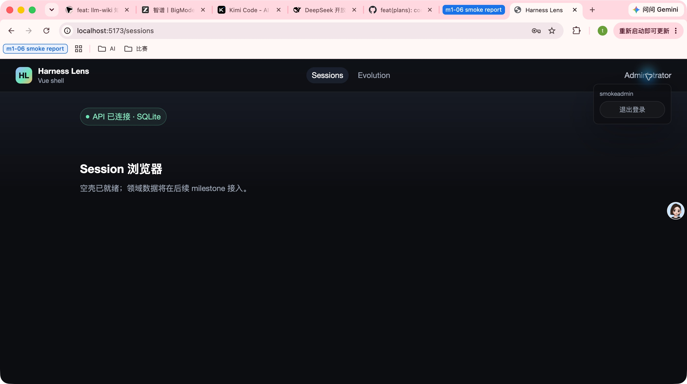
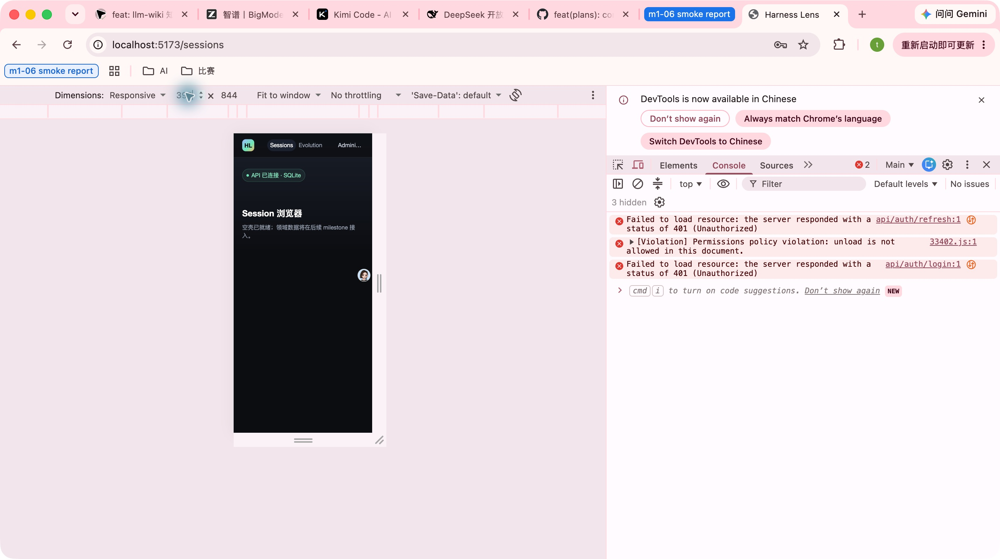
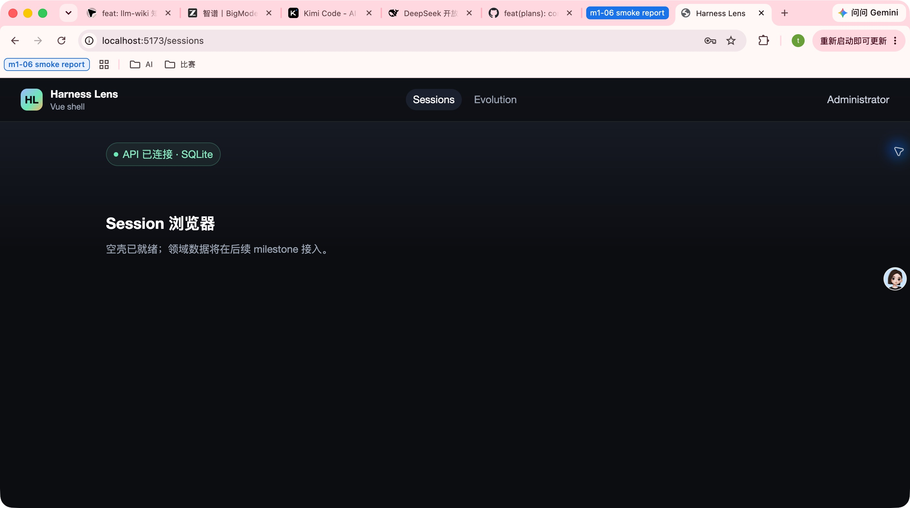

- Issue
- #30 · M1 identity frontend
- PR
- #77
- Commit
- 24dd771
- Runtime
- FastAPI + Vite + Google Chrome
- Database
- Temporary SQLite smoke instance
- Before evidence
- ../m1-07-identity-frontend/smoke-report.html
Harness Evolution · PR #77 · After Fix
M1-07 身份前端集成冒烟复测报告
在真实 Chrome、Vite 与 FastAPI/SQLite 上复测身份主链路。首轮发现的两项缺陷已修复：全新页面无 Vue 或 Element Plus 运行时错误，390px 视口无横向溢出，用户菜单与退出入口保持在视口内。
14冒烟场景
14通过
0应用运行时错误
5/5浏览器集成测试
Environment and Artifact
2026-10-25 · macOS · Google Chrome · localhostScenario Matrix
14 pass| # | 场景 | 结果 | 观测 | 证据 |
|---|---|---|---|---|
| 01 | 未登录直达受保护页 | PASS | /sessions 被重定向到 /login?redirect=/sessions，受保护内容未闪现。 | screenshots/01-unauthenticated-login.jpg URL redirect verified |
| 02 | 错误密码内联提示 | PASS | 错误密码显示“用户名或密码错误”，页面未出现原生 dialog。 | screenshots/02-login-invalid.jpg inline AUTH_INVALID |
| 03 | 首登强制改密 | PASS | 临时密码登录后进入 /change-password?redirect=/sessions。 | screenshots/03-force-password-change.jpg |
| 04 | 确认密码不一致 | PASS | 页面显示“两次输入的新密码不一致”，停留改密页。 | screenshots/04-password-mismatch.jpg |
| 05 | 新旧密码相同 | PASS | 页面显示“新密码不能与当前密码相同”。 | screenshots/05-same-password-rejected.jpg |
| 06 | 合法改密并回跳 | PASS | 合法新密码保存后回到 /sessions，顶栏显示当前用户。 | screenshots/06-password-changed-sessions.jpg |
| 07 | 用户菜单可操作 | PASS | 用户菜单可展开，展示用户名与退出按钮。 | screenshots/07-user-menu.jpg CDP menu.open=true |
| 08 | 退出与受保护路由 | PASS | 退出后回到 /login，内存态与查询缓存清空。 | screenshots/09-logout-login.jpg TopNav/logout tests |
| 09 | 新密码重新登录 | PASS | 新密码登录成功并回到 /sessions。 | screenshots/10-relogin-success.jpg |
| 10 | Refresh 与 me | PASS | 真实 HTTP 登录、refresh、me 均返回 200；新 access 可访问 admin 用户。 | HTTP login=200 / refresh=200 / me=200 mustChangePassword=false |
| 11 | 首次加载控制台 | PASS | Chrome Runtime consoleAPI 监听无 warning/error/exception；无 Vue 或 ElInput 渲染错误。 | CDP Runtime.consoleAPICalled violations=[] pnpm test:integration 5/5 |
| 12 | 首次依赖预构建 | PASS | 首次浏览器页面加载未出现 optimized dependencies changed/reloading。 | Vite log assertion passed |
| 13 | 390×844 窄视口 | PASS | scrollWidth 不超过 clientWidth；用户菜单和退出按钮边界均在视口内。 | screenshots/08-narrow-viewport.jpg CDP layout assertions passed |
| 14 | 主视口布局 | PASS | 主视口顶栏、导航、状态和空态均正常，无浏览器运行时错误。 | screenshots/11-main-viewport.jpg |
Issues and Observations
No defects foundNo defects were found.
Evidence
9 screenshots







Automated Coverage Assessment
4 areas reviewed| 区域 | 覆盖 | 结论 | 建议 |
|---|---|---|---|
| 身份主链路 | Computer Use + 真实 HTTP | 未登录回跳、登录失败、强制改密、退出、重新登录和 refresh/me 均通过。 | 保持真实 API 与浏览器双层验证。 |
| 控制台与依赖预构建 | Chrome DevTools + CDP | 无 Vue/Element Plus runtime violation，首次加载无依赖重载。 | Element Plus 或 Vite 配置变更后重跑该集成测试。 |
| 响应式布局 | 真实 Chrome 390×844 + CDP bounds | 无横向溢出；用户菜单和退出按钮的边界在视口内。 | 后续新增顶栏入口时继续检查 390px 预算。 |
| 自动化回归 | Web + API + cross-stack | Web 84 passed / 1 skipped；API 67 passed；integration 5/5。 | CI 保留 build、MySQL、flow 和 browser integration 门禁。 |
Conclusion
复测通过首轮两项缺陷均已修复并在同一提交上重新验证，当前未发现新的身份前端集成问题。
- 全新登录页无 Vue 或 Element Plus 运行时错误。
- 390px 视口无横向溢出，用户菜单及退出入口可用。
- 身份主链路和真实 HTTP refresh/me 全部通过。
- 首轮失败证据保留在独立目录，便于 before/after 对照。
证据源：Computer Use 截图、Chrome DevTools、真实 HTTP 结果和跨栈集成测试。HTML 由 JSON 渲染生成。